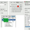
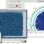
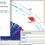

|  |  |  |
|
Download
(Registration required but free) |
The abundance of complete, annotated microbial genomes has enabled the reconstruction of biological networks that incorporate diverse datasets, including expression as well as biochemical and physiological characterizations. Analysis of biological networks assists in the identification of gene targets and the generation of new hypotheses about their functions. Since the functional association between genes can often be inferred from their chromosomal location and proximity, researchers need an interactive tool for visualizing and analyzing network data in the spatial context of the chromosome. The NIAID Bioinformatics and Computational Bioscience Branch (BCBB) has developed the Networks on Circular Chromosome (NetCirChro) tool to enable users of the network visualization platform Cytoscape to overlay networks onto a circular chromosomal map. Data selection is synchronized between Cytoscape and the NetCirChro plug-in, allowing users to leverage Cytoscape’s rich features for navigation, search, filtering, and highlighting of complex microbial genome datasets. NetCirChro helps scientists discover the potential role of gene organization in functional regulatory networks. It also assists researchers in understanding the functional properties of neighboring genes.
{kind=link}
{kind=link}
{kind=link}